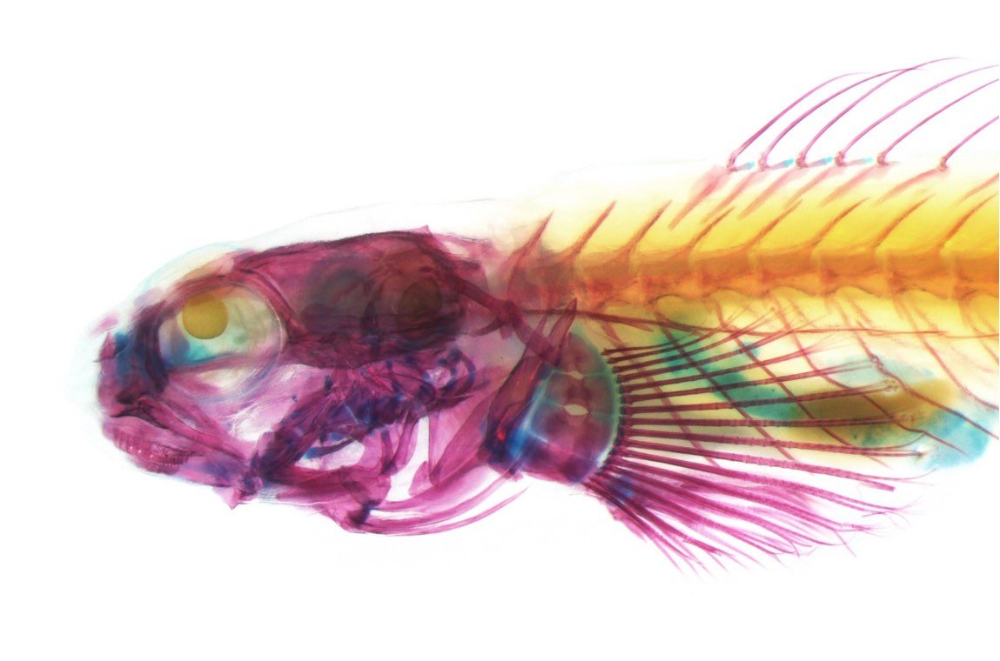
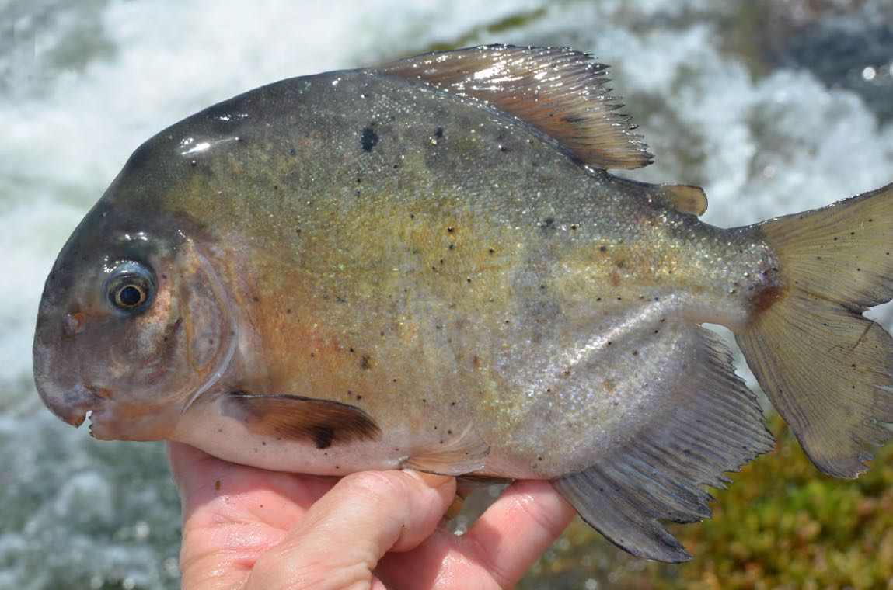
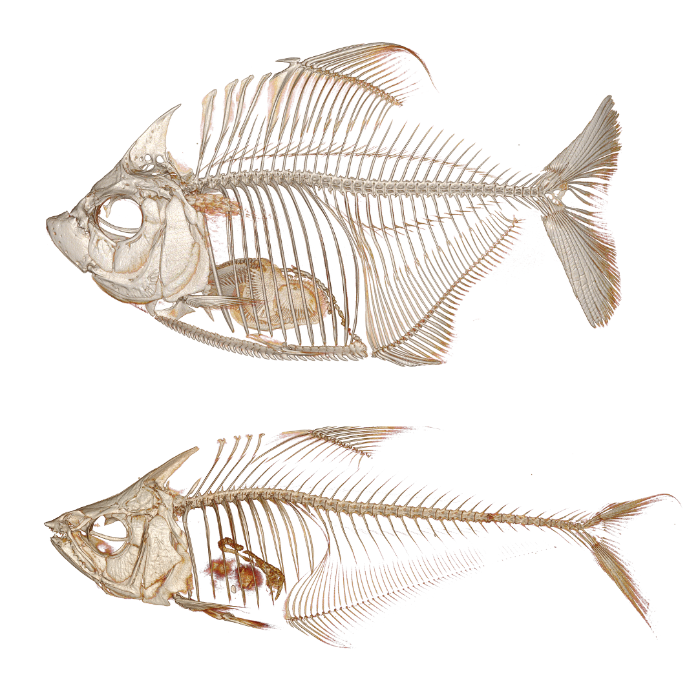

Trophic Novelty
Cnidarian Nibbler
In a recent endeavor, we examined Clinocottus globiceps, one of 13 species of fish known to feed substantially on anemones. To prey on anemones, predators may require specialized phenotypes to their resist stinging cells and to tear through their elastic body wall. Thus, we compared C. globiceps with closely related non-anemone-feeding species using a suite of bio-imaging techniques. We examined their feeding behaviors, jaw mechanics and musculature, and the histological composition of their lips - the first line of defense against stinging cells. We find that C. globiceps was likely pre-adapted for anemone-feeding because it shares a suitable biting morphology with its sister species, an algae-feeder. Current evidence suggests the morphology of C. globiceps first evolved in association with feeding on algae and was repurposed for anemone-feeding. Nevertheless, C. globiceps exhibits a novel thrashing behavior when attacking anemones that augments the performance of their pre-existing traits. Our findings underscore the role of behavior in mediating form-function relationships enabling trophic novelty.
Relevant publications:
- Huie JM, Arnette SD, Evans AJ, Cohen KE, Buser TJ, Crawford CC, Kane EA, Kolmann MA. 2025. Behavioral novelties and morphological exaptation underlie trophic novelty in an anemone-feeding fish. Journal of Zoology. doi.org/10.1111/jzo.70041
- Crawford CH, Yadav S, Huie JM, Kane EA. 2025. Stop, chomp, and roll: rotational feeding behavior in marine sculpins. Northwestern Naturalist, 105(1), 54-58. doi.org/10.1898/NWN23-11
Cleaner Fishes

In cleaning mutualisms, cleaner animals remove and consume the ectoparasites of their clients. Of the ~200 cleaner fish species, most only clean as juveniles or occasionally as adults (facultative cleaners). Species that rely on cleaning throughout adulthood (dedicated cleaners) are rare and belong to one of two clades - wrasses in the Indo-Pacific and gobies in the Caribbean. We asked whether cleaner gobies have feeding morphologies that differ from non-cleaners and if those clean more frequently have more extreme morphologies? We found that dedicated cleaners have shorter and stronger jaws than non-cleaners as well as comb-like teeth instead of conical fangs. Cleaner gobies appear to posses a "scraping" morphology, while cleaner wrasses have a "picking" morphology. Previous attempts to unify cleaners as a single ecological guild based on body shape, coloration, and size have faced mixed results, and we suspect that grouping by feeding morphology is no different. Furthermore, facultative cleaner gobies have intermediate morphologies relative to dedicated cleaners and non-cleaners; supporting that the greater the ecological specialization the more finely-tuned the morphology.
Relevant publications:
- Huie JM, Thacker CE, Tornabene L. 2020. Co-evolution of cleaning and feeding morphology in western Atlantic and eastern Pacific gobies. Evolution, 74(2), 419-433. doi.org/10.1111/evo.13904
Rheophilic Herbivores
South American drainages are home to carnivorous piranhas and their herbivorous cousins, the pacus. Many pacus eat the nuts, fruits, and seeds of terrestrial plants that enter the rivers. Although, some genera are phytophagous and feed on primarily on riverweed (Podostemaceae), an aquatic plant that grows exclusively in river rapids (rheophilic). Extremely high-flow environments likely act as natural barriers that prevent most pacus from accessing riverweed outside of the dry season when water levels are lower. We explored whether pacus that feed on riverweed year round have modified jaw morphologies and body shapes suited for consuming riverweed and living in the rapids, respectively. While phytophagous lineages possess some unique cranial features and dentitions, their jaw mechanics still largely resemble those of other herbivorous pacus. In contrast, obligate phytophages have more streamlined body shapes that separate them from other serrasalmids and increase swimming stability in the rapids. Our findings emphasize how feeding ecologies can be influenced by traits that extend beyond the head.
Relevant publications:
- Huie JM, Summers AP, Kolmann MA. 2019. Body shape separates guilds of rheophilic herbivores (Myleinae: Serrasalmidae) better than feeding morphology. Proceedings of the Academy of Natural Sciences of Philadelphia, 166(1), 1-15. doi.org/10.1635/053.166.0116

Photo by Mark Sabaj.
Scale-Feeding Fishes

A number of fishes specialize in feeding on the mucus and scales of other fishes. This behavior is relatively rare but exists across 37 genera and has evolved independently multiple times. Despite exhibiting highly specific feeding ecologies, there is considerable variation in scale-feeder morphology, behavior, and tendencies. For instance, the wimple piranha (Catoprion mento) has a robust lower jaw with stout teeth that it uses to scrape scales off other fishes. In contrast, a scale-feeding characin (Roeboides affinis) has extraoral teeth on its snout and dislodges scales by ramming into their prey. These species also appear to prefer differently sized scales, with the former targeting relatively large scales and the latter small ones. Overall, scale-feeding fishes are far more diverse than originally presumed and are united as a guild solely by their shared possession of formidable, albeit different, tooth morphologies. Our findings emphasize that attempts to categorize discrete trophic niches can mask existing functional and ecological diversity as well as incorrectly suggest mismatches between form and function.
Relevant publications:
- Kolmann MA, Huie JM, Evans K, Summers AP. 2018. Specialized specialists and the narrow niche fallacy: a tale of scale-feeding fishes. Royal Society open science, 5(1), 171581. doi.org/10.1098/rsos.171581
- Kolmann MA, Bonato K, Evans KM, Huie JM, Malabarba L. [in press, 2026]. Ecological diversity of Neotropical ectoparasitic fishes in Ecology and Evolution of Amazonian Fishes.